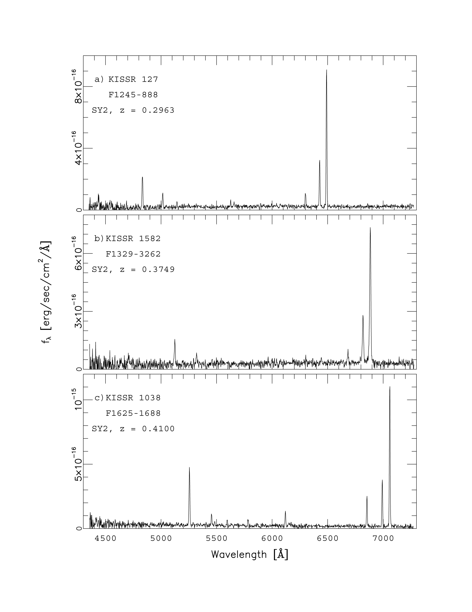
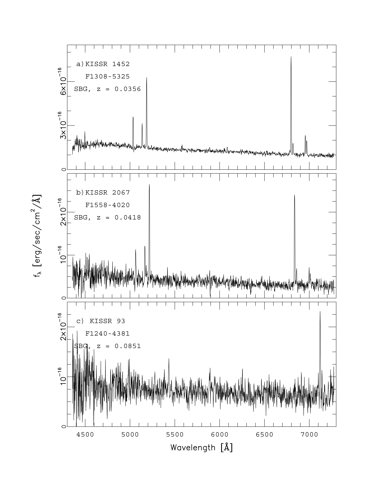
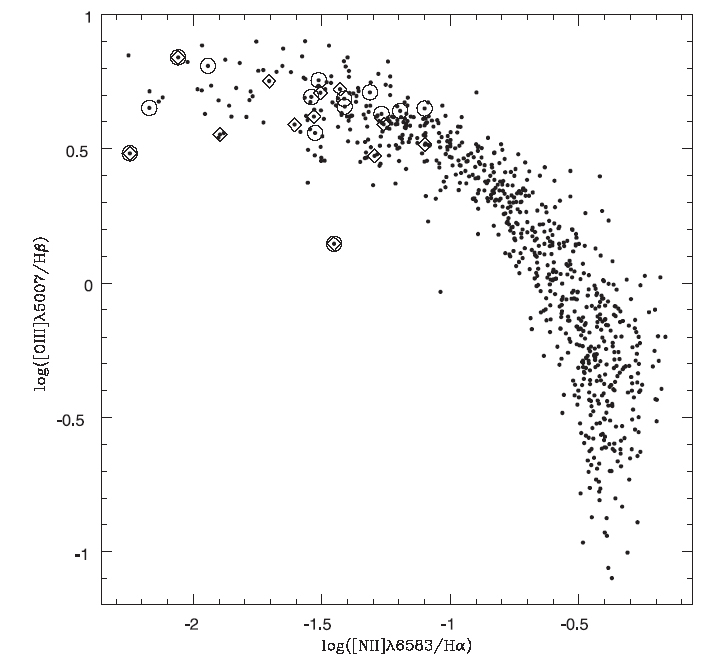

Home
| People | Partners
| VOStat | StatCodes | Data
& Tutorials | Events | Bibliographies

Galaxy spectraThe CASt datasetsf1245-888.datf1329_3262.dat f1625-1688.dat f1308-5325.dat f1558-4020.dat f1240-4381.dat Astronomical background An essential mode of astronomical investigations involves
obtaining spectra; i.e. a plot of the intensity of the object as a
function of wavelength of light. Spectra reveal both continuum
processes (e.g. blackbody surface temperature, nonthermal processes)
and quantum processes (e.g. absorption and emission lines from electron
transitions in heated atoms of various elements). We thus learn a
vast amount of detail about astronomical objects from spectral analysis. Spectra in the visible band are obtained with familiar ground-based telescopes involving a parabolic mirror, optical, a dispersing element (prism or grating), and a detector (usually a CCD imager). The CCD images are heavily processed: cosmic ray events and flat-field distortions are removed, spectral orders are extracted, nonlinear wavelength and flux calibrations are applied. The result is a uniformly-spaced univariate signal of real numbers (flux) as a function of wavelength where the underlying statistical properties have been obscured by the complex data processing. Signal and noise are often confounded. Galaxy spectra are heavily studied both to understanding galaxy properties and to map the luminous mass in the Universe via their redshifts (a surrogate for distance). All show absorption line complexes from the normal stars. Heated gas sometimes produces narrow emission lines, particularly when heated by young OB stars. Extreme cases are called "starburst galaxies" (SBGs) or LINERs. Some galaxies also show a nonstellar continuum and bright, broad emission lines from the "active galactic nucleus" (AGNs). AGNs have various manifestations and classifications (e.g. Seyfert galaxies, quasars, radio galaxies, blazars) but the nonstellar emission is always attributed to a supermassive black hole at the galactic center undergoing accretion of gas. SBGs and weaker AGNs can easily be confused. Spectral studies of galaxies is a major field of extragalactic astronomy. Dataset Here we illustrate some of the challenges of
galaxy spectral analysis with data from the KPNO (Kitt Peak National
Observatory) International Spectroscopic Survey (KISS) which has
catalogued over 2000 emission-line galaxies. We show here
low-resolution spectra from the 8-meter-class Hobby-Eberly Telescope in
Texas. The datasets, figures and numerical results below are obtained
from the following paper:
The first figure shows three spectra from Seyfert 2 galaxies. The progressive shift of the spectra to the red can be seen (the fractional shift is the redshift z). The principal emission lines are the [OIII] doublet from doubly-ionized oxygen atoms (towards the right, always with a 1:3 intensity ratio), and the H-beta line with rest wavelength 4861 Angstroms. 
Following are three starburst galaxy spectra at lower
redshifts. The prominent lines (starting from the red) are:
forbidden ionized nitrogen doublet [NII] at 6583 and 6548 A; the strong
hydrogen H-alpha line at 6562 A, the forbidden ionized oxygen
doublet at [Oiii] 5007 and 4958 A; H-beta at 4861 A. 
The
classification of spectra as SBGs or AGN is often based on the ratio of
line strengths from spectra like these. Below is a plot of two
such ratios for KISS SBGs. This graph is from Lee, Salzer &
Melbourne, ApJ 616, 752 (2004). 
The datasets provided here have two columns: wavelength (in Angstroms) and flux (in erg/s/cm2/A). and correspond to the six spectra shown above. Statistical exercises
|
    |